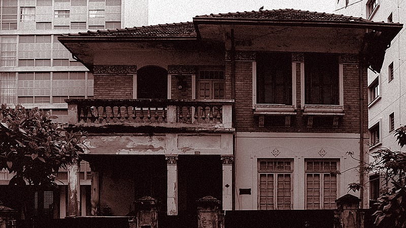
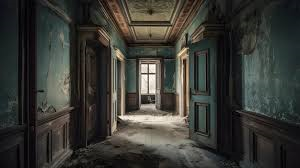

Você estava andando nas ruas, quando você encontra uma casa assombrada, você decide entrar e explorar a casa, o que você fara primeiro?
 Você decide explorar a sala, você encontra muita poeira, e uma fogueira! Você tem fósforos, você quer acender?
Você decide explorar a sala, você encontra muita poeira, e uma fogueira! Você tem fósforos, você quer acender?
No corredor você encontra uma sala com escadas para o segundo andar, o que vc prefere?